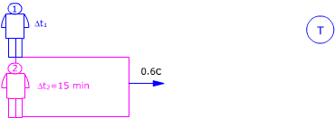

| El rectángulo representa un recinto que se mueve respecto
al observador 1 con velocidad 0.6c  Observador 2 (Recinto) Observador 1 (Sol): Aplicando la conversión de tiempos resulta: $$\begin{aligned} &\Delta t_1=\frac{\Delta t_2}{\gamma}\\[6pt] &\gamma=\sqrt{1-\left(\frac{v}{c}\right)^{2}}=\sqrt{1-\left(\frac{0{,}6\,c}{c}\right)^{2}}=0{,}8\\[6pt] &\Delta t_1=\frac{15\ \mathrm{min}}{0{,}8}=18{,}75\ \mathrm{min} \end{aligned}$$ Para el observador colocado en el Sol el neutrón tarda 18.75 min en desintegrarse, durante este tiempo le verá alejarse una distancia: $$x_1=v\,\Delta t_1=0{,}6\cdot3\cdot10^{8}\ \mathrm{\frac{m}{s}}\ 18{,}75\cdot60\ \mathrm{s}=2{,}03\cdot10^{11}\ \mathrm{m}$$ Esta distancia es mayor que la distancia Sol-Tierra, por tanto sí que llegará el neutrón a la Tierra |